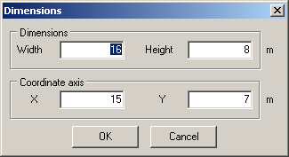
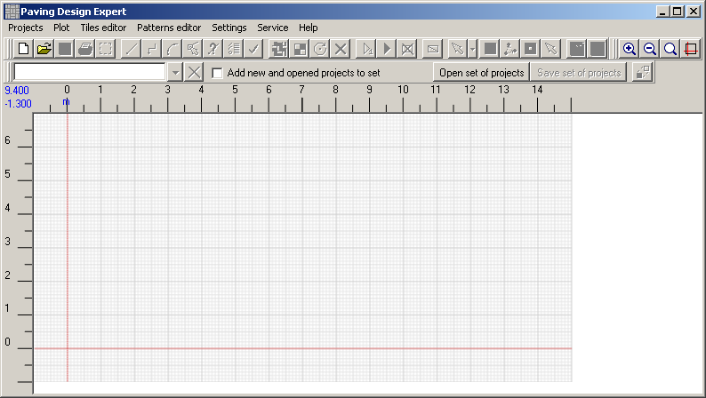

You should determine drawing size, which will be enough to create this project.
By default, the drawing size is 50x50 meters; the coordinate axes are in the middle of this space.
Thus, the positive part of the X and Y axes is 25 meters. It's a lot for our example.
Choose menu
Plot >
Sizes. Install these sizes:

The drawing will be as follows:
